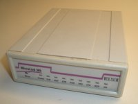

Internetzugang
Die Arbeit mit Computernetzwerken ist vielen Computer-Anwendern nicht vertraut. Dadurch kommt es oft zu Missverständnissen beim Einrichten eines Internetzuganges. Das Problem liegt oftmals darin, dass nicht die Einrichtung des Internetzuganges an sich schwierig ist, sondern dass mangelnde Kenntnisse über Netzwerke und das Internet an sich das eigentliche Problem sind. Hier sollen kurz die möglichen Arten einer Einwahl in das Internet aufgeführt und auf die entsprechenden Anleitungen im Wiki verwiesen werden.
Einen bestehenden Internet-Zugang kann man mit dem Online-Werkzeug Netalyzr  unter mehreren verschiedenen Aspekten überprüfen.
unter mehreren verschiedenen Aspekten überprüfen.
Analog-Modem/ISDN¶
Einzelner Rechner¶
| Die Einwahl über ein analoges Modem oder eine ISDN-Karte ist nach wie vor interessant. Über jede Telefonleitung kann eine (wenn auch sehr langsame) Verbindung in das Internet aufgebaut werden. Durch den Einsatz einer Tarifmanager-Software, die je nach Uhrzeit und Wochentag den günstigsten Call-by-Call Anbieter anwählt, kann man sehr komfortabel die Kosten für den Internetzugang reduzieren. Wiki-Artikel: Analog und ISDN |
Mehrere Rechner¶
| Auch wer nur einen Analog- oder ISDN-Zugang zum Internet sein eigen nennt, kann diese Verbindung mit anderen Rechnern im lokalen Netzwerk teilen. Der Ubuntu-Rechner kann sich via Modem/ISDN in das Internet einwählen und diese Verbindung dann im Netzwerk zur Verfügung stellen. Wiki-Artikel: Analog und ISDN und Router |
DSL¶
DSL-Modem direkt mit Rechner verbunden¶
Einzelner Rechner¶
| Ist der Rechner direkt mit dem vom Internetanbieter gelieferten DSL-Modem verbunden, so muss sich der Rechner selber in das Internet einwählen. Diese Art der Verbindung nennt man "PPP over Ethernet" oder kurz PPPoE. Um PPPoE unter Ubuntu einzurichten, müssen die Zugangsdaten des Internetanbieters in den Rechner eingegeben werden. |
Mehrere Rechner¶
Ubuntu als Router¶
| Oftmals soll die Internetverbindung eines Rechners im Netzwerk zur Verfügung gestellt werden. Dadurch können alle Rechner im Netzwerk die Internetverbindung des Ubuntu-Rechners benutzen. Solch einen Rechner nennt man üblicherweise Router bzw. Software-Router. Dabei ist zu beachten, dass das Netzwerk korrekt aufgebaut sein sollte. So muss der Router über mindestens eine Netzwerkkarte verfügen, wobei diese mit einem Switch verbunden ist, über den dann weitere Rechner und das DSL-Modem vernetzt werden können. Verzichtet man auf einen Switch und verbindet direkt zwei Rechner über ein Netzwerkkabel, so muss man teilweise darauf achten, ein Crossoverkabel zu verwenden (zu den Details siehe PC-Direktverbindung per Netzwerk-Kabel).
Dient ein Ubuntu-Rechner als Router, so müssen zwei Dinge eingerichtet werden. Zum einen muss der Router sich in das Internet einwählen können, und zum anderen muss der Router die Internetverbindung im Netz zur Verfügung stellen. Wiki-Artikel: Internetverbindungsfreigabe, Router und WLAN Router |
Windows als Router¶
| Auch ein Windows-Rechner (ab Windows 98 SE) kann seine Internetverbindung im Netzwerk anderen Rechnern zur Verfügung stellen. Unter Windows nennt man dies Internet Connection Sharing (ICS). In diesem Fall baut der Windows-Rechner die Verbindung auf und stellt sie im Netzwerk zur Verfügung. Weitere Rechner im Netzwerk können über den Windows-Router dann sogar via DHCP ihre IP- und Netzwerkdaten beziehen. Wiki-Artikel: Internetverbindungsfreigabe über Windows und IP-Adresse wechseln |
DSL-Modem mit (WLAN-) Router verbunden¶
| Besitzt man einen sogenannten DSL-Router mit integriertem DSL-Modem, der über normale Netzwerkkabel mit den angeschlossenen Rechnern verbunden ist, so braucht man sich um die Einrichtung der Internetverbindung unter Ubuntu selber keine Gedanken zu machen. Der DSL-Router selber baut die Verbindung auf und stellt diese dann im lokalen Netzwerk zur Verfügung. Im DSL-Router arbeitet meist ein integrierter DHCP-Server, der den verbundenen Rechnern ihre Verbindungsdaten zukommen lässt. Wiki-Artikel: IP-Adresse wechseln Viele DSL-Router besitzen inzwischen die Möglichkeit, Rechner auch kabellos per WLAN zu verbinden. Hier muss man eigentlich dasselbe wie bei einer Kabelverbindung beachten, allerdings bedeutet das Einrichten des WLAN-Adapters im Computer oftmals ein wenig Arbeit. Ein Sonderfall stellen Hardware-Router ohne integriertes DSL-Modem dar. Hier kann man zumindest ausprobieren, ob ein vorhandenes DSL-Modem vom Router aus via PPPoE angesteuert werden kann. Wiki-Artikel: WLAN |
Begriffserklärungen¶
Analoges Modem¶
|  | Ein Modem (abgekürzt für Modulator / Demodulator) wandelt digitale Daten in analoge Signale und umgekehrt. So können Daten über eine herkömmliche Telefonleitung als Audiosignal geschickt werden. In Zeiten günstiger DSL-Anschlüsse sind Modems nicht mehr so relevant. Allerdings ist ein Modem als Faxempfänger oder portabler Internetzugang via Laptop immer noch wichtig. Modems, die über die serielle Schnittstelle angeschlossen werden, stellen für Linux kein Problem dar. Die Standards sind offen, und jedes serielle Modem sollte direkt funktionieren. Schwierigkeiten bereiten Modems, die per USB angeschlossen werden, die in Laptops eingebaut sind, oder solche, die in den Rechner als PCI-Karte eingebaut werden. Diese Modems sind oft Softmodems, hier übernimmt der Rechner die eigentliche Arbeit. Treiber vom Hersteller für Softmodems existieren oftmals nicht. Es gibt jedoch auch USB-Modems, die ohne extra Treiber an Linux über eine virtuell serielle Schnittstelle (meist /dev/ttyACM0, manchmal auch /dev/ttyUSB0) funktionieren. Am besten ist es, man informiert sich vor dem Kauf auf den Seiten des Herstellers oder in Internetforen, ob das gewünschte Modem unter Linux funktioniert. |
ISDN-Adapter¶
 | Neben der analogen Telefonie ist ISDN weiterhin in Deutschland verbreitet. Mittels einer ISDN-Karte kann man sich über ISDN in das Internet einwählen. Leider ist die Unterstützung von ISDN-Karten unter Linux nicht perfekt. Einigen Karten vom Hersteller AVM scheinen jedoch gut unterstützt zu werden. Wiki-Artikel: ISDN-Karten |
DSL-Modem¶
| Das DSL-Modem ist ein Modem zum Übertragen von Daten über eine DSL-Leitung. Das Modem bekommt man für gewöhnlich vom DSL-Anbieter kostenlos überlassen. Über die Telefonleitung selber werden bei einem DSL-Anschluss Daten sowie Telefonie geschickt. Ein Splitter trennt die beiden Signale. An den Splitter selber wird dann das DSL-Modem angeschlossen, und an dieses dann das Gerät, das die Verbindung zum Internet aufbaut. Dieses wird auch als „Internetgateway“ bezeichnet, also üblicherweise direkt ein Computer oder ein „DSL-Router“. |
Internetgateway¶
Üblich ist es, dass man den Internetzugang über einen Internetgateway, der die Internetverbindung aufbaut, allen Computern zur Verfügung stellt. Der Internetgatway stellt auf eine beliebige Art eine Verbindung zum Internet her. Über DHCP sollte dieser Internetgateway als Standardroute angegeben sein. Meist werden die Zugangsdaten des Internetgateway in der Web-Oberfläche eingegeben.
Siehe auch: Ubuntu als Internetgateway
Switch¶
| Ein Switch verbindet mehrere Computer über Netzwerkkabel. Dadurch können Daten zwischen den Rechnern ausgetauscht werden. Switche sind intelligente Hubs, die Daten nur an den Rechner schicken, an den sie auch gelangen sollen. Dadurch erreichen sie eine höhere Datenübertragungsrate als Hubs. Hubs werden schon seit einiger Zeit nicht mehr in neuen Computernetzen verbaut. |
WLAN Access Point¶
Ein WLAN Access Point kann man als kabellosen Switch bezeichnen. Ein Access Point wird an ein vorhandenes Netzwerk angeschlossen. Weitere Rechner können sich dann über den Access Point in das Netzwerk einhängen. Oftmals beinhalten Hardware-Router schon einen Access Point, so dass man sich diese Investition für zuhause sparen kann.
Eierlegende Wollmilchsau¶
| Es gibt auch eierlegende Wollmilchsäue unter den Netzwerkgeräten. Oftmals sind in diesen Geräten viele unterschiedliche Komponenten in einem Gerät untergebracht. So sind WLAN-Router oft DSL-Modem, Router, Access Point und Switch in einem. Aber auch die Integration eines Druck- oder Fileservers ist keine Seltenheit. Besitzt man ein solches Gerät, so ist dieses oft auch für die Einwahl in das Internet verantwortlich, d.h. auf allen angeschlossenen Rechnern braucht nur das lokale Netzwerk eingerichtet zu werden. Die Verbindung in das Internet übernimmt dann dieses Gerät. |
Wiki-Artikel¶
NetworkManager - stellt die Verbindung mit dem Internet über Kabel und drahtlose Verbindungen her
NetworkManager/NetworkManager ohne GUI - Den Networkmanager auch für Serverinstallationen nutzen
Recovery-Modus - die Internetverbindung auch im Recovery Modus, der virtuellen Konsole oder im Terminal herstellen (sudo-Rechte nötig!)
Wicd - stellt die Verbindung mit dem Internet her (Alternative zum Network-Manager)
WLAN - WLAN einrichten und konfigurieren. Allgemeine Informationen zur Technik, Sicherheit und Fehlersuche
Analog und ISDN - Zugang über analoges Modem oder ISDN einrichten
interfaces - Konfigurationsdatei der Netzwerk-Schnittstellen - manuelle Netzwerkkonfiguration
Router - Ubuntu als Software-Router - Internetverbindung gemeinsam nutzen
Fritzbox
 Artikelreihe zur Nutzung der weitverbreiten Hardware der Fa. AVM
Artikelreihe zur Nutzung der weitverbreiten Hardware der Fa. AVM
WLAN Router - Ubuntu als WLAN-Accesspoint - Internetverbindung über WLAN gemeinsam nutzen
Internetverbindungsfreigabe - Internetverbindung eines Ubuntu-PCs über LAN oder WLAN Ad-Hoc gemeinsam nutzen
Internetverbindungsfreigabe über Windows - Internetverbindung eines Windows-PCs gemeinsam nutzen. Windows-Internetfreigaben benötigen keine Autorisierung. Die Verbindung sollte ohne weitere Einstellungen funktionieren.
Hardware-Router - Hinweise zur Konfiguration des Internetzugangs mittels eines handelsüblichen Hardwarerouters
Portweiterleitung - Serverdienste hinter einem Router anbieten
DNS Problembehebung - Lösungsansätze bei Fehlern mit der Namensauflösung und dem Aufruf von Internetseiten
Proxyserver - Zugriff auf ein Netzwerk (z.B. Internet) über einen Proxyserver
UMTS per PCMCIA - UMTS unter Ubuntu mit einer UMTS/GPRS-Karte
Howtos:
Howto/Hotspot auf PC einrichten - den heimischen Computer zum Hotspot für andere Rechner, Smartphones etc. machen
Empfehlung¶
Zum Abschluss noch ein kurzer Tipp, wie man am einfachsten einen Internetzugang für einen oder mehrere Rechner aufbaut. Mit einem (WLAN-) DSL-Router ist man unabhängig vom eingesetzten Betriebssystem der verbundenen Geräte. Kann ein Netzwerkgerät mit TCP/IP umgehen, so kann es über den Router in das Internet gehen. Besitzt der Router einen eingebauten DHCP-Server (was normalerweise der Fall ist), so brauchen angeschlossene Rechner auch nicht lange konfiguriert zu werden. Weitere Vorteile eines DSL-Routers sind:
Stromsparend
Oftmals verbilligt über den Internetanbieter zu beziehen
Einfach in der Konfiguration
Ist ein Switch eingebaut, so können ohne weitere Geräte mehrere Rechner gleichzeitig ins Netz.
Stabile Internetverbindung
Unabhängig vom eingesetzten Betriebssystem
In der Regel "out-of-the-box" sicher (bis auf WLAN)
- Erstellt mit Inyoka
-
 2004 – 2017 ubuntuusers.de • Einige Rechte vorbehalten
2004 – 2017 ubuntuusers.de • Einige Rechte vorbehalten
Lizenz • Kontakt • Datenschutz • Impressum • Serverstatus -
Serverhousing gespendet von